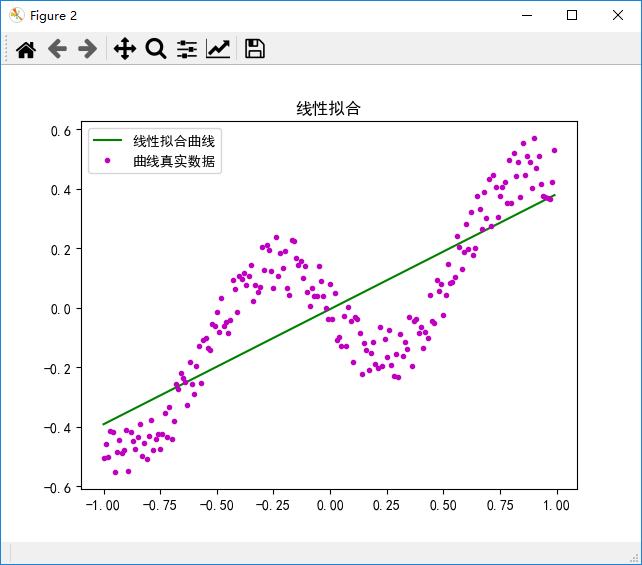
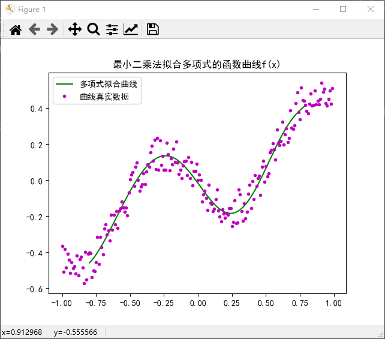

基于最小二乘法拟合曲线
摘要
最小二乘法不应该只是简单的线性参数估计
1 最小二乘法简介
1.1 最小二乘法的历史背景
最小二乘法发展于天文学和大地测量学领域，科学家和数学家尝试为大航海探索时期的海洋航行挑战提供解决方案。准确描述天体的行为是船舰在大海洋上航行的关键，水手不能再依靠陆上目标导航作航行。1801年，意大利天文学家朱塞普·皮亚齐发现了第一颗小行星谷神星。经过40天的追踪观测后，由于谷神星运行至太阳背后，使得皮亚齐失去了谷神星的位置。随后全世界的科学家利用皮亚齐的观测数据开始寻找谷神星，但是根据大多数人计算的结果来寻找谷神星都没有结果。当年24岁的高斯也计算了谷神星的轨道。奥地利天文学家海因里希·奥伯斯根据高斯计算出来的轨道重新发现了谷神星。高斯使用的最小二乘法的方法发表于1809年他的著作《天体运动论》中，而法国科学家勒让德于1806年独立发现“最小二乘法”，但因不为世人所知而没没无闻。两人曾为谁最早创立最小二乘法原理发生争执。1829年，高斯提供了最小二乘法的优化效果强于其他方法的证明，见高斯-马尔可夫定理。
相关回归分析、方差分析和线性模型理论等数理统计学的几大分支都以最小二乘法为理论基础[1]。作为其进一步发展或纠正其不足而采取的对策，不少近现代的数理统计学分支也是在最小二乘法基础上衍生出来的[1]。正如美国统计学家斯蒂格勒 (s．M．Stigler)所说，“最小二乘法之于数理统计学犹如微积分之于数学”[2]。最小二乘法创立的历史过程充满着丰富的科学思想，这些对今 日的数学创造仍有着重要的启示意义。
1.2 最小二乘法原理
最小二乘法（least squares method）是一种数学优化建模方法，它通过最小化误差的平方和来寻求数据的最佳函数匹配，通过最小二乘法可以简便的求得未知数据，并使得所求值和实际数据之间的误差的平方和最小。
假设我们对某一变量$x$或多个变量$x_1,x_2...x_n$构成的相关变量$y$感兴趣，我们用$q$个独立变量或则$p$个系数拟合出如下的函数模型（参数b是为了使所选择的函数模型同观测值y相匹配），一般情况下，观测值多于选择参数：
$$ y_m = f(x_1,x_2,...,x_q;b_1,b_2,...,b_p)
$$ 然后最重要的是怎么判断不用拟合的质量。高斯和勒让德的给出的解决方案是：假设测量误差的平均值为0，令每一个测量误差对应一个变量并与其它测量误差不相关（随机无关），假设在测量误差中绝对不含系统误差，即它们都是是纯偶然误差(有固定的方差)，误差围绕真值波动。除此之外，测量误差符合正态分布，这保证了偏差值在最后的结果$y$上忽略不计。确定拟合的标准应该被重视，并小心选择，较大误差的测量值应被赋予较小的权[1]。并建立如下规则：被选择的参数，应该使算出的函数曲线与观测值之差的平方和最小。用函数表示为：
$$ min\sum_{i=0}^n(y_m-y_i)^2
$$
2 最小二乘法在拟合中的应用
最小二乘法是从误差拟合角度对回归模型进行参数估计或 系统辨识，并在参数估计、系统辨识以及预测、预报等众多领域中得到极为广泛的应用[3]。然而大多同学对最小二乘法的认识都比较模糊，仅仅把最小二乘法理解为简单的线性参数估计[2]。在一般情况下，最小二乘法通常用于求解使用一阶泰勒级数展开线性化的一组非线性方程。求解非线性方程是一个使用牛顿法的迭代过程。收敛速度取决于解的初始猜测的质量。非线性最小二乘法通常称为束调整，因为解的初始估计值的所有值都一起修改（在束中调整）。这种技术有时也称为高斯-牛顿法。一般最小二乘法可用于求解一组未知数的一组方程。唯一的要求是方程的数量至少与未知数一样多。如果方程是线性的，最小二乘法将产生未知数的直接解。如果方程不是线性的，则需要对未知数进行初始猜测，结果是 对初始参数的调整。重复此操作直到结果收敛（调整变得非常接近于零）。线性的最小二乘问题发生在统计回归分析中；它有一个封闭形式的解决方案。非线性的问题通常经由迭代细致化来解决；在每次迭代中，系统由线性近似，因此在这两种情况下核心演算是相同的。
2.1 线性拟合
对于线性方程组，最小二乘法将产生未知数的直接解。线性情况在数学上与使用零作为所有参数的初始猜测来执行调整的一般情况相同。收敛只需要一次迭代。
方程必须是以下形式：
$$ F_i(x_1, x_2,...,x_n)=a_1x_1+a_2x_2+...+a_nx_n=k_i
$$ 因此雅可比矩阵$J$是

变量$y$与$n$个变量$x_1,x_2,...x_n$的内在联系是线性的，即：
$$ y=a0+\sum{i=0}^n(a_ix_i)
$$ 设$xi$的第$i$次观测值为$x{ij}$，对应的函数值为$y_i(i=1,2,...,m)$，则函数的偏差平方和为：
$$ s=\sum{i=1}^m(y_i-y_i^1)=\sum{i=1}^m(y_i-a_0-a_1x)^2
$$ 将实验数据$(x_{ij}, y_j)$代入上式可得$a_0,a_1,a_2,...,a_3$。
2.2非线性拟合
但是实际的科学实验得到的数据$(x_i,y_i)$的因变量$x$与自变量$y$之间可能根本不存在线性关系，此时可以考虑用一个$n$次多项式来拟合$y$与$x$之间的函数关系[4]。对于$n$次多项式来说，我们需要将它化为我们前面已经已经介绍的线性形式。如果方程个数$n$大于未知量个数$m$的方程组成为超定方程组，如果数学模型是最常用的代数多项式，则称为代数多项式拟合[5]。但是更多的曲线拟合均不能通过变量变换转换为线性拟合问题，如：
$$ y = a+bln(x/c)
$$
$$ y=a+bx^c
$$
$$ y=a+b2^x
$$
关于非线性拟合问题 ，可以利用Taylor展开，逐次线性化 ，亦即对拟合参数逐次逼近，以得到问题的解答[6]。然而，非线性问题这样处理的难点，远不是需要大量的反复计算，而是迭代过程发散，也就是说 ，当迭代初值选择得不好时，Taylor展 开完全失真 ，致使迭代值不是逼近真值，而是远离真值 [7]。
通常我们选择的是迭代法：
(1) 给定某个初始值$x_0$；
(2) 对于第$k$次迭代，寻求一个增量$\Delta x_k$，使得$||f(x_k+\Delta x_k)||_2^2$达到最小值；
(3) 若$\Delta x_k$足够小，则停止；
(4) 否则，另 $x_(k+1)=x_k+\Delta x_k$，返回第2步
这让求解导函数为零的问题变成了一个不断寻找下降增量 ∆xk 的问题。以下就是寻找增量的方法。 考虑第k次迭代，想要寻找∆xk，最直接的方法是将目标函数F(x)在xk附近进行泰勒展开：
$$ F(x_k+\Delta x_k) = F(x_k) + J(x_k)^T\Delta x_k + 1/2\Delta x_k^TH(x_k)\Delta x_k
$$ 其中$J(x_k)$是关于$F(x)$的一阶导数(梯度、雅可比(Jacobian)矩阵)，$H(x_k)$则是二阶导数(海塞(Hessian)矩阵)。如果上式中只保留一阶项，则称为一阶梯度法或最快下降法，取$\Delta x=-J(x_k)$，即增量的方向为梯度的反方向，通常还设置一个步长$\lambda$。如果保留二阶项，则成为二阶梯度法或牛顿法。 一阶梯度法过于贪心，容易走出锯齿路线，反而增加了迭代次数；而二阶梯度法则需要计算目标函数的 H 矩阵，这在问题规模较大时非常困难，我们通常倾向于避免 H 的计算[8] [9]。在最小二乘法的线性拟合的方法中，高斯牛顿法和列文伯格—马夸尔特方法是两种比较经典的方法
2.3 拟合模型
我们知道多项式曲线拟合是一种较常用的数据处理方法,但当数据点较多时,只采用一种多项式曲线函数拟合所有数据点难以取得较好的拟合效果。但是数据拟合方法有很多，例如对数曲线拟合，反函数曲线拟合，二次曲线拟合，三次曲线拟合 ，幂函数曲线拟合 ，指数曲线拟合等。一般先观察散点图来确定曲线 的类型，不过散点图都是相关关系的粗略表示，有时候散点图可能与几种曲线都很接近，这时建立相应的经验函数可能都是合理的，但由于选择不同的曲线 ，得到同一个问题的多不同经验函数，一般我们需要确定怎样从这些经验函数中选择最优的一个[10] 。吴宗敏提出用几种函数进行拟合，计算历史数据点实测值和拟合值的误差平方和最小的为最优经验函数[11]。但是该方法存在一定问题：误差平方和最小，但误差波动较大，即一些点误差很小 ，一些点误差相对较大 。以该问题作为出发点，刘霞提出了一种新的确定经验函数的方法，用几种不同的函数进行拟合 ，从中选取最优的经验函数 ，最优经验函数确定的条件如下[10]：(1) 历史数据点误差为正和误差为负的个数之差小于适应性参数；(2) 计算误差的方差，方差最小的为最优的拟合函数。杨岚通过动态优化方法确定主成分数可提高所建立数学模型的预测效果，与交互验证方法选择主成分数方法相比较，动态优化方法确定的主成分数能够得到更好的预测结果，该方法能有效提高偏最小二乘数学模型的预测效果，是建立具有更好适应性数学模型的有效方法[12]。在最小二乘曲线拟合中,自变量的误差常常被略而不计，丁克良提出采用正交最小二乘法拟合曲线，该方法以正交距离残差平方和极小为准则，同时顾及了因变量和自变量的误差；基于间接平差原理详细推导了相关模型和算法，计算表明采用正交最小二乘法拟合曲线,拟合效果整体上优于普通最小二乘法[13]。
常见的曲线拟合模型有：对数函数、指数函数、幂函数、逻辑回归、多项式、Holt-Winters预测。其中Holt-Winters 预测使用 TIBCO Spotfire Enterprise Runtime for R 来计算对时间序列或可强制为时间序列的任何事物的 Holt-Winters 筛选。这是以指数方式对时间序列的级别、趋势和季节分量进行加权移动平均值筛选。所选的平滑参数用于最小化一步向前预测误差平方和。但是如何能得到一个更好的拟合模型还有待研究。
3 基于最小二乘法拟合曲线的简单实践
1、拟合多项式为：$y = a_0 + a_1x + a_2x^2 + ... + a_kx^k$ 2、求每个点到曲线的距离之和：$Loss = ∑(yi - (a_0 + a_1x + a_2x^2 + ... + a_kx^k))^2$ 3、最优化Loss函数，即求Loss对a0,a1,...ak的偏导数为0 3.1、数学解法——求解线性方程组： 整理最优化的偏导数矩阵为：X：含有xi的系数矩阵，A：含有ai的系数矩阵，Y：含有yi的系数矩阵 求解：XA=Y中的A矩阵 3.2、迭代解法——梯度下降法： 计算每个系数矩阵A[k]的梯度，并迭代更新A[k]的梯度 A[k] = A[k] - (learn_rate * gradient)


实现方法为最小二乘法和求解线性方程组，误差下降为：0.6290094844905918
参考文献
[1] 贾小勇, 徐传胜, 白欣. 最小二乘法的创立及其思想方法[J]. 西北大学学报: 自然科学版, 2006, 36(3): 507-511.
[2] LANCASTER H 0．Encyclopediaofstatisticalscience [J]．NewYork：Wiley，1988．
[3] 邹乐强. 最小二乘法原理及其简单应用[J]. 科技信息, 2010 (23): 282-283.
[4] 陆健. 最小二乘法及其应用[J]. 中国西部科技, 2007 (9): 19-21.
[5] 王新和, 程世洲. 曲线拟合的最小二乘法[D]. , 2004.
[6] 概率统计计算．科学出版社，2009．
[7] 邢书珍, 邢天奇. 非线性最小二乘拟合的计算方法[J]. 中国铁道科学, 1995, 16(3): 64-71.
[8] 高翔.视觉SLAM14讲
[9] 皮皮蒋.线性最小二乘和非线性最小二乘. https://www.jianshu.com/p/bf6ec56e26bd
[10] 刘霞, 王运锋. 基于最小二乘法的自动分段多项式曲线拟合方法研究[J]. 科学技术与工程, 2014 (3): 55-58.
[11] 吴宗敏.散乱数 据拟合的模 型、方法和理论．北京：科学出版社，2007
[12] 杨岚, 冯新泸. 动态优化偏最小二乘模型的建立与应用[J]. 后勤工程学院学报, 2008, 24(2): 75-77.
[13] 丁克良, 欧吉坤, 赵春梅. 正交最小二乘曲线拟合法[J]. 测绘科学, 2007, 32(3): 18-19.